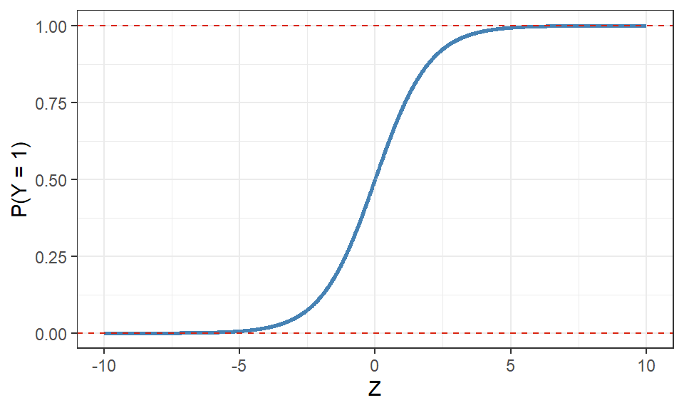
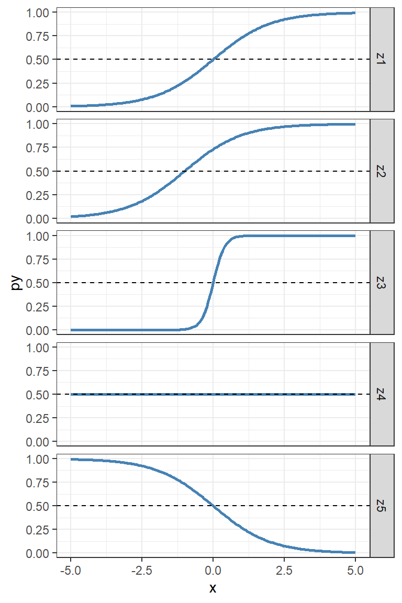

De tidigare kapitlen har fokuserat på modeller där responsvariabeln antas vara kvantitativ och kontinuerlig. Dessa modeller är begränsade till just detta fall men det går med enkla transformeringar att utöka modellerna att också anpassa modeller där responsvariabeln är en annan variabeltyp eller följer en annan skala. En utav dessa utökningar kallas för logistisk regression som modellerar en binär (två kategorier) kvalitativ responsvariabel.
Utöver att modellen anpassar en annan form av responsvariabel behöver vi också justera hur vi kommer fram till modellens anpassade värden. Inom linjär regression är minsta kvadratmetoden den absolut enklaste anpassningsmetoden med simpla formler för att skatta modellens parametrar, men även maximum likelihoodmetoden (ML) kan användas med hjälp av en iterativ optimeringsalgoritm för att finna de parameterskattningar som motsvarar minsta kvadratmetoden. Fördelen med att använda ML-metoder i modellanpassningen är att metoden kan användas för mer komplexa modeller, däribland logistisk regression.
11.1 Binär responsvariabel
Med en binär responsvariabel är det vanligast att vi kodar variabeln med 0 och 1, exempel: Om patienten tillfrisknade inom studieperioden så anger vi \(Y_i = 1\) annars \(Y_i = 0\). Inom statistik och maskininlärning kallar vi problem där vi har en kvalitativ reponsvariabel för klassificering där målet är att skapa en modell som kan ge så många korrekta klassificeringar (predikterade klasser) som möjligt utan att misklassificera observationer till fel klasser.
Istället för att anta att \(Y|X \sim N(...)\), antar vi istället att \(Y|X \sim Bernoulli(...)\). Väntevärdet som modeller anpassar kommer inte längre direkt vara ett värde på responsvariabelns skala utan vi anser oss modellera sannolikheten att observationen antar värdet 1:
\[
\begin{aligned}
E[Y] = P(Y_i = 1) = \pi_i
\end{aligned}
\] På samma sätt som vi använde medelvärdet av Y som en form av grundmodell för en kontinuerlig responsvariabel kan vi i detta fall använda andelen 1:or som en grundmodell för den binära responsvariabeln. Men vi vill även här skapa modeller som kan ta hänsyn till annan information, de förklarande variablerna, för att förhoppningsvis förbättra förklaringen av responsvariabeln.
Eftersom linjära samband är lätta att arbeta med och tolka så vill vi formulera denna betingade sannolikhet utifrån den linjära modellen. En linjär regressionsmodell formuleras enligt:
\[
\begin{aligned}
\mathbf{Y} = \mathbf{X}\boldsymbol{\beta} + \mathbf{E}
\end{aligned}
\] men vi kan också formulera enskilda \(Y_i\) i matrisform enligt: \[
\begin{aligned}
Y_i = \mathbf{X}_i'\boldsymbol{\beta} + E_i
\end{aligned}
\] där värden på \(Y_i\) täcker hela den reella tallinjen (\(Y \in \mathbb{R}\)). \(\mathbf{X}_i'\) är den i:te raden från designmatrisen angiven som en kolumnvektor, därav behovet av att transponera till en radvektor.
En sannolikhet antar bara värden mellan 0 och 1, dvs. \(\pi \in [0,1]\), så vårt mål är att tvinga in den linjära regressionsmodellen från hela tallinjen till utfallsrummet \([0,1]\). Detta kan lösas med hjälp utav den logistiska funktionen som kan uttryckas på två olika sätt:
\[
\begin{aligned}
P(Y_i = 1|Z_i) &= \frac{exp[Z_i]}{1 + exp[Z_i]}\\
\\
\text{alternativt}\\
\\
&= \frac{1}{1 + exp[-Z_i]}
\end{aligned}
\] där \(Z_i\) är den anpassade linjära funktion som beror på de förklarande variablerna; \(\mathbf{X}_i'\boldsymbol{\beta}\).
Notera
Notera att vi inte har någon felterm \(\mathbf{E}\) här. Eftersom vi modellerar en sannolikhet för en viss händelse (\(Y_i = 1\)), placeras felet eller slumpmässigheten med den logistiska funktionen i just den sannolikhetsdefinitionen.
Vi kan se hur den logistiska funktionen ser ut för olika värden på \(Z_i\).
Visa kod
data <-tibble(z =seq(-10, 10, by =0.01),y =exp(z) / (1+exp(z)) )ggplot(data) +aes(x = z, y = y) +geom_line(linewidth =1, color ="steelblue") +theme_bw() +geom_hline(yintercept =0, linetype =2, color ="#d9230f") +geom_hline(yintercept =1, linetype =2, color ="#d9230f") +labs(y ="P(Y = 1)", x ="Z")

Formen på den logistiska funktionen.
Vi ser tydligt att värdena på \(P(Y_i = 1)\) nu begränsas till värden mellan 0 och 1 där extremt negativa värden av \(Z_i\) asymptotiskt går mot 0 och extremt positiva värden av \(Z_i\) asymptotiskt går mot 1.
Med hjälp av den logistiska funktionen kan vi få ett uttryck för den logistiska regressionen ifall vi byter ut \(Z_i\) med den linjära regressionsmodellen: \[
\begin{aligned}
P(Y_i = 1| \mathbf{X}_i, \boldsymbol{\beta}) = \frac{exp[\mathbf{X}_i'\boldsymbol{\beta}]}{1 + exp[\mathbf{X}_i'\boldsymbol{\beta}]}
\end{aligned}
\]
För en enkel logistisk regression innehållande en kontinuerlig förklarande variabel kan vi se följande effekter på den logistiska funktionens form givet olika parametervärden.
I den enkla logistiska regressionsmodellen (med en förklarande variabel) kan vi se hur olika parameterskattningar påverkar denna form. I följande kod skapar vi fem olika linjära modeller med olika värden på interceptet och lutningen.
Visa kod
# Anger antalet observationernObs <-200# Skapar en egen logistisk funktion som transformerar värdenlogisticFun <-function(z){ p <-exp(z)/(1+exp(z))return(p)}data <-tibble(# Skapar en variabel xx =seq(-5, 5, length = nObs),# En linjär funktion där beta0 är 0 och beta1 är 1z1 =0+1*x,# En linjär funktion med ett nollskilt värde på interceptetz2 =1+1*x,# En linjär funktion med brantare lutningz3 =0+5*x,# En linjär funktion med ingen lutningz4 =0+0*x,# En linjär funktion med negativ lutningz5 =0-1*x ) %>%# Roterar materialet för enklare visualiseringpivot_longer(cols =-x,names_to ="Modell", values_to ="z" ) %>%# Skapar sannolikheten utifrån den logistiska funktionenmutate(py =logisticFun(z) )ggplot(data) +aes(x = x, y = py) +geom_line(linewidth =1, color ="steelblue") +facet_grid(rows =vars(Modell)) +theme_bw() +geom_hline(yintercept =0.5, linetype =2)

Olika former på den logistiska funktionen givet olika värden på parametrar
Beroende på parametervärdena får denna så kallade sigmoidkurva (kurvan ser ut som ett S) olika former.
z1: Med ett intercept på 0 hamnar punkten där kurvans sannolikhet är 0.5 vid värdet \(Z_i = 0\).
z2: När vi ändrar på \(\beta_0\) flyttas också interceptet i den logistiska funktionen, ett positivt intercept innebär att kurvans sannolikhet är större än 0.5 vid värdet \(Z_i = 0\).
z3: När \(\beta_1\) blir brantare blir också den logistiska funktionen brantare och vi hamnar snabbare ute i extremerna, 0 och 1.
z4: När \(\beta_1\) är svag eller ligger nära 0 blir den logistiska funktionen mindre brant och vid 0 visas ingen förändring av sannolikheten. Vi kan jämföra detta med att i ett binärt fall vi har chansen att gissa rätt på 1 eller 0 hälften av tiden av ren slump. Om en variabel som vi lägger till i modellen inte bidrar med någon information, kvarstår denna rena gissning.
z5: En negativ \(\beta_1\) innebär att sannolikheten blir mindre ju större värden på \(Z_i\) vi har, vi vänder alltså på sigmoidkurvan.
11.1.2 Logitlänken
Med hjälp av länkfunktioner kan vi plocka fram den linjära modellen från den logistiska funktionen och andra varianter av funktioner som bygger vidare på den linjära modellen. Generellt kan vi säga att en länkfunktion är den transformering som sker från den linjära modellen till den modell som beskriver den icke-kontinuerliga responsvariabeln.
För logistisk regression används logitlänken: \[
\begin{aligned}
log\left( \frac{\pi_i}{1 - \pi_i}\right) = Z_i = \mathbf{X}_i'\boldsymbol{\beta}
\end{aligned}
\]
I denna litteratur betecknar \(log()\) alltid den naturliga logaritmen1. Vi kan uttrycka det som att den logistiska regresionssmodellen är linjär i sin logitlänk för sannolikheten \(\pi\).
Denna länk visar också hur vi bör tolka parametrar från den linjära modellen. Uttrycket inuti logaritmen beskriver ett odds, sannolikheten att något inträffar dividerat med sannolikheten att något inte inträffar, specifikt oddset att \(Y_i = 1\). Den linjära modellen beskriver då logodds och en lutningsparameter beskriver en förändring i logodds, även kallad en oddskvot, som vi kommer återkomma till senare.
11.2 Logistisk regression
Till skillnad från vanlig linjär regression kan vi inte längre använda minsta kvadratmetoden för att skatta modellens parametrar då vi inte längre har en linjär relation mellan de förklarande och responsvariabeln. Istället behöver vi använda responsvariabelns (log)likelihoodfunktion och iterativt optimera för att hitta de parametervärden som genererar det högsta värdet på funktionen.
För en Bernoulli-fördelad slumpvariabel kan vi skriva loglikelihoodfunktionen som: \[
\begin{aligned}
logL(\pi) &= log\left[\prod\limits_{i = 1}^n \left( \pi^{Y_i} \cdot (1 - \pi)^{1 - Y_i}\right) \right]
\\&= \sum\limits_{i = 1}^{n_1}log(\pi) + \sum\limits_{i = n_1 + 1}^{n}log(1 - \pi)
\end{aligned}
\]
där \(\pi\) är sannolikheten för \(P(Y=1)\), \(n\) är antalet observationer och \(n_1\) är antalet 1:or i materialet2. När vi modellerar den Bernoullifördelade variabeln med en logistisk regression antar vi att \(P(Y=1)\) varierar beroende på värden av våra förklarande variabler, så vi byter ut \(\pi\) med ett uttryck som förhåller sig till de förklarande variablerna och \(\beta\). Detta ger loglikelihoodfunktionen: \[
\begin{aligned}
logL(\boldsymbol{\beta}) = \sum_{i = n_1 + 1}^{n} \operatorname{-}\mathbf{X}_i'\boldsymbol{\beta} - \sum_{i=1}^n \ln (1 + exp\left[\operatorname{-}\mathbf{X}_i'\boldsymbol{\beta} \right])
\end{aligned}
\] Denna funktion optimeras numeriskt, vanligtvis med Fisher Scoring Algorithm3. Det är denna algoritm som R använder sig utav när vi en logistisk regressionsmodell anpassas.
11.2.1glm()
glm() används för att anpassa generaliserade linjära modeller, en mer flexibel typ av linjära modeller. Med hjälp av argumentet family kan vi ange vilken fördelning och länkfunktion som vi anser responsvariabeln behöver för att transformera den linjära modellen till den aktuella modellen för responsvariabeln.
Objektet som glm() returnerna har många liknande delobjekt som lm(). Det går även att använda liknande funktioner såsom summary(), coef(), och residuals() för att plocka ut enskilda objekt som vi är vana vid att göra. Däremot kommer dessa objekt inte tolkas på samma sätt som vi har gjort i tidigare kapitel då vi måste ta hänsyn till den förändrade modellstrukturen.
Vi kan anpassa en modell baserat på mtcars där vi modellerar huruvida bilen har automat eller manuell växel am. I datamaterialet har variabeln redan kodats binärt där 0 är automatisk och 1 manuell växling. Vi använder tre variabler ur data för att modellera denna responsvariabel.
Visa kod
# Anpassar modellenmodel <-glm( am ~ mpg + cyl + hp,data = mtcars,# Anger binomial som familj där logitlänken är länkfunktionenfamily ="binomial" )# Sammanfattar modellensummary(model)
Call:
glm(formula = am ~ mpg + cyl + hp, family = "binomial", data = mtcars)
Coefficients:
Estimate Std. Error z value Pr(>|z|)
(Intercept) -27.66400 16.22158 -1.705 0.0881 .
mpg 1.09425 0.58578 1.868 0.0618 .
cyl -0.63106 0.68703 -0.919 0.3583
hp 0.06299 0.03046 2.068 0.0386 *
---
Signif. codes: 0 '***' 0.001 '**' 0.01 '*' 0.05 '.' 0.1 ' ' 1
(Dispersion parameter for binomial family taken to be 1)
Null deviance: 43.230 on 31 degrees of freedom
Residual deviance: 18.347 on 28 degrees of freedom
AIC: 26.347
Number of Fisher Scoring iterations: 7
I summary-utskriften får vi nu annan information än vad vi är vana vid. Koefficienttabellen finns fortfarande kvar med lite andra rubriker, men sedan saknas en modellutvärdering som vi är van att se. Istället presenteras modellens devians, ett tillhörande AIC-värde och ett resultat från optimeringsalgoritmen. I och med att vi nu genomför optimering måste vi kontrollera att optimeringen faktiskt har konvergerat, det vill säga nått sitt maximum, vilket innebär att vi behöver vara uppmärksamma på fel- eller varningsmeddelanden som R ger oss relaterat till konvergensen. I detta fall funkade allting utan problem och optimeringen har konvergerat efter 7 iterationer.
Viktigt
Om en modell inte konvergerar kan vi öka antalet iterationer vi tillåter optimeringsalgoritmen att gå innan den stannar. Vi behöver då lägga till glm(..., control = list(maxit = 50)) eller något annat större värde. Standardargumentet är att algoritmen genomför 25 iterationer.
Tänk på att en utskrift direkt från R för denna modell inte är lämpligt att använda i presentationssyften utan vi behöver återigen plocka ut de olika delarna och skapa snyggare tabeller.
Koefficienttabellens lutningsparametrar tolkas inte som i en vanlig linjär regression eftersom länkfunktionen transformerar den linjära modellen till responsvariabelns skala, till exempel när antalet miles per gallon (mpg) ökar med ett ökar inte y med 1.094. Istället beskriver dessa parametrar, \(\beta_j\), förändringen i logoddset för \(Y = 1\) och kan efter en transformering, \(e^{\beta_j}\), beskriva oddskvoten för \(Y=1\) när den förklarande variabeln ökar med en enhet.
För just denna modell kan vi transformera parameterskattningen för mpg enligt \(e^{1.094} = 2.987\) som att när mpg ökar med en enhet, så är oddset att motorn är manuellt växlad (\(Y = 1\)) ca 3 gånger högre.
Givet att en lämplig likelihoodfunktion används och ‘nog stort data’ anses testvariabeln \(\left(Z = \frac{\hat{\beta}_j - \beta_j}{SE_{\hat{\beta}_j}}\right)\) följa en standardiserad normalfördelning. Detta kallas för ett Wald-test och är de tester som vi ser i koefficienttabellen.4 Medelfelen för respektive parametrar tas från kovariansmatrisen för \(\hat{\boldsymbol{\beta}}\) som beräknas genom att använda andraderivator från likelihoodfunktionen vilket medför att vi kan skapa tester och intervallskattningar för \(\boldsymbol{\beta}\).
11.3 Utvärdering av logistisk regression
I vanlig regression kan vi utvärdera modellens lämplighet genom residualanalys där vi jämför \(Y_i - \hat{Y}_i\) och undersöker om residualerna uppfyller modellantaganden. I logistisk regression kommer den observerade responsvariabeln bara anta två värden, 1 och 0, och modellens anpassade värden anta värden mellan 0 och 1 vilket innebär att vanliga residualer inte längre jämför samma sorts variabel.
I ett klassificeringsproblem kan vi istället jämföra de observerade klasserna för \(Y\) med predikterade klasser \(\hat{Y}\) i en korstabell, även kallad förväxlingsmatris. Eftersom modellen egentligen predikterar en sannolikhet för \(Y = 1\) och inte den faktiska klassen behöver vi gå ett steg längre för att faktiskt kunna skapa förväxlingsmatrisen. Vi kan tänka att sannolikheter större än 0.5 innebär att \(Y = 1\) är mer sannolikt att inträffa än \(Y = 0\) vilket leder oss till att också prediktera den klassen för dessa observationer, \(\hat{Y} = 1\).
När vi skapar förväxlingsmatrisen räknar räknar frekvenserna av antalet \(Y = 1\) som blivit predikterade till de olika klasserna \(\hat{Y} = 1\) (\(f_{11}\)) och \(\hat{Y} = 0\) (\(f_{10}\)) och antalet \(Y = 0\) som blivit predikterade till respektive klass (\(f_{01}\) och \(f_{00}\)).
Förväxlingsmatris med frekvenser av olika fall.
Predikterad klass
\(\hat{Y} = 1\)
\(\hat{Y} = 0\)
Sann klass
\(Y = 1\)
\(f_{11}\)
\(f_{10}\)
\(Y = 0\)
\(f_{01}\)
\(f_{00}\)
I R kan en sådan tabell enkelt fås fram genom table(y, yHat) där y innehåller de sanna värdena och yHat innehåller prediktionerna. Notera att dessa vektorer måste ha samma observationsordning för att korstabellen ska blir korrekt. Utifrån förväxlingsmatrisen kan ett antal utvärderingsmått beräknas som fokuserar på olika aspekter av modellens prestanda.
De två enklaste måtten är andelen korrekta prediktioner och andelen felaktiga prediktioner. Vi kallar andelen korrekta prediktioner för modellens träffsäkerhet (eng. Accuracy) och andelen felaktiga prediktioner för modellens felkvot (eng. Misclassification rate).
\[
\begin{aligned}
\text{Träffsäkerhet} &= \frac{f_{11} + f_{00}}{n} = \frac{f_{11} + f_{00}}{f_{11} + f_{10} + f_{01} + f_{00}} \\
\text{Felkvot} &= \frac{f_{10} + f_{01}}{n} = \frac{f_{10} + f_{01}}{f_{11} + f_{10} + f_{01} + f_{00}} = 1 - \text{Träffsäkerhet} \\
\end{aligned}
\] När träffsäkerheten i modellen är hög kommer felkvoten vara låg och vice versa vilket gör att endast ett av dessa mått egentligen behöver beräknas. Problemet med att bara använda dessa mått som en indikation på modellens prestanda är att de lätt kan missa att modellen fokuserar sin anpassning på att prediktera en av klasserna bra. När vi arbetar med klassificering så spelar andelen av vår data som tillhör vardera klass roll, detta kallas för klassbalanser. När vi ska modellera en binär responsvariabel är det bra att först ta fram en tabell med andelen som tillhör klass 1 och andelen som tillhör klass 0 för att bilda en uppfattning om vilken och hur mycket information vi har om de båda.
Om andelarna är balanserade, det vill säga nära 50% för de båda andelarna, kommer modellen ha lika mycket information om de båda klasserna och kan förmodligen anpassa en modell som tar hänsyn till att vi vill prediktera båda klasserna rätt. Om andelarna däremot är olika stora kommer problemet att modellera \(P(Y = 1)\) bli svårare, och svårighetsgraden avgörs av hur stor skillnad det är mellan andelarna. Om det är stor skillnad på andelarna säger vi att vi har obalanserade klasser vilket leder till svårigheter att hitta en bra och meningsfull modell. Exempelvis om vi har 95% 0:or och 5% 1:or kanske modellen tycker att den bästa prediktionen vi kan göra är att säga att alla observationer är 0, för då blir träffsäkerheten 95%.
Vi behöver därför titta på flera mått för att avgöra om modellen är överlag bra eller kanske bara fokuserar på att modellera den ena av klasserna. Med fokus på \(Y = 1\) beskriver sensitiviteten (eng. True Positive Rate, sensitivity, recall) hur stor andel av de observerade 1:orna som faktiskt också predikterades som 1:or. Motsatsen är specificiteten (eng. True Negative Rate, specificity) som beskriver hur stor andel obsrverade icke-1:or som också predikterades som icke-1:or.
\[
\begin{aligned}
\text{Sensitivitet} &= \frac{f_{11}}{f_{11} + f_{10}}\\
\text{Specificitet} &= \frac{f_{00}}{f_{01} + f_{00}}
\end{aligned}
\] Om det ena måttet är stort och det andra litet betyder det att modellen fokusera på endast någon av klasserna, medan om båda måtten är stora betyder det att modellen lyckats prediktera alla klasser lika bra.
Hur stora klassobalanser som är hanterbart avgörs dels av hur starkt sambandet mellan våra förklarande variabler och \(Y\) är, och dels av det totala antalet observationer som finns i data. Har vi ett starkt samband mellan våra förklarande variabler och \(Y\) så kan vi ha mer obalanserade klasser eftersom variablerna kan på ett bra sätt separera dem. På samma sätt, om vi har väldigt många observationer så kan vi ha mer obalanserade klasser då det ändå finns mycket information som modellen kan använda för att hitta en bra anpassning. Det är bra att beräkna sensitivitet och specificitet på tränings- och valideringsmängden för att få en förståelse för om man har problem med obalanserade klasser eller ej. Har vi problem med obalanserade klasser finns det olika metoder för det som kan användas i vissa fall, men som ligger utanför detta underlag.
11.4 Funktion för utvärdering
Vi kan skapa en funktion i R som sammanställer denna korstabell och utvärderingsmått åt oss:
Visa kod
## Funktion som skapar förväxlingsmatris med tillhörande mått för klassificeringsproblem# newData : Materialet innehållande förklarande variabler # model : Den skattade modellen# trueY : Vektor innehållande de sanna klass-värden i samma ordning som observationerna i newDataclassEvaluation <-function(newData, model, trueY, type ="class", digits =3){# Predikterar klassen för newData givet den skattade modellen med gränsen 0.5 pred <-ifelse(predict(model, newdata = newData, type ="response") >=0.5, 1, 0)# Konverterar de predikterade klasserna till en faktor med samma nivåer som de sanna # klasserna pred <-factor(pred, levels =levels(factor(trueY)))# Skapar förväxlingsmatris med rader som indikerar sanna klassen och kolumnen som# indikerar predikterade klassen confusion <-table(trueY, pred)# Träffsäkerhet är antalet korrekta prediktioner dividerat med antalet observationer accuracy <-sum(diag(confusion)) /sum(confusion)# Felkvoten är 1 - träffsäkerheten misclass <-1- accuracy# Sensitivitet är antalet korrekta prediktioner AV DEN NUVARANDE KLASSEN dividerat # med antalet observationer AV DEN NUVARANDE KLASSEN sensitivity <-diag(confusion) /rowSums(confusion) # Specificitet är antalet korrekta prediktioner AV ICKE DEN NUVARANDE KLASSEN dividerat # med antalet observationer AV ICKE DEN NUVARANDE KLASSEN specificity <-NULLfor(i in1:nrow(confusion)){ specificity[i] <-sum(confusion[-i, -i])/sum(confusion[-i, ]) }# Sammanställer alla resultat i en egen lista som sedan returneras evaluation <-list(confusionMatrix = confusion, overall =cbind(träffsäkerhet = accuracy, felkvot = misclass),classWise =rbind(sensitivitet = sensitivity,specificitet = specificity) )return(evaluation)}
Med hjälp av den skapade funktionen kan vi utvärdera modellen som anpassats på mtcars. Nu har vi endast en träningsmängd vilket innebär att utvärderingen endast kommer visa hur bra modellen är på det data den använt i sin anpassning, men ifall vi hade en valideringsmängd hade vi med funktionen kunnat lägga in valideringsmängdens data och responsvariabel i newData och trueY som också ger oss samma mått vilka vi kan använda för att bedöma modellens generaliserbarhet.
I förväxlingsmatrisen ser vi att vi fått majoriteten av observationerna i diagonalen, det vill säga korrekta prediktioner. Träffsäkerheten är 87.5% vilket är högt, men det är fortfarande ett antal observationer som predikterats fel. Det är dock betydligt bättre än att slumpmässigt gissa sig till klassen (50%) vilket indikerar på att modellens förklarande variabler faktiskt bidrar till responsvariabeln. De klasspecifika måtten är jämna, 85-90% för respektive vilket antyder att modellen är lika bra på att prediktera klass 1 som den är att prediktera klass 0.
Om vi har dålig anpassning på träningsdata så har vi troligen valt en felaktig eller för enkel modell till exempel att vi inte har med rätt förklarande variabler i modellen. Det kan också vara så att det finns en stor grad av slumpmässighet i vår responsvariabel, det vill säga att vi har mycket brus i data, vilket kan göra att det är svårt att hitta en bra modell. Vi kan tänka oss ett scenario där \(\pi_i\) alltid ligger runt 0.5, oavsett värden på alla potentiella förklarande variabler vilket leder till att vår modell inte kan bli bättre än slumpmässig gissning av klasserna 0 och 1.
Om våra utvärderingsmått är allmänt dåliga så är det inte relevant att göra vidare analyser med modellen, t.ex. undersöka vilka variabler som är signifikanta. Detta gäller speciellt om sensitivitet eller specificitet är nära noll på träningsdata. Då har vi klassificerat alla (eller nästan alla) observationer till endast en klass, och vår modell har inte förmågan att särskilja de två klasserna i responsvariabeln.
11.5 Likelihoodkvottest
Ytterligare en metod vi kan använda att utvärdera modeller, utöver förväxlingsmatrisen och dess mått eller AIC, är modellens likelihood. Likt när vi jämför den förklarande variationen mellan modeller i linjär regression kan vi anse en skillnad i likelihood beskriva hur mycket en eller flera variabler tillför till modellen, och likt ett partiellt F-test kan vi genomföra inferens på denna skillnad i likelihood.
Hypoteserna som undersöks formuleras på samma sätt som i ett partiellt F-test, i \(H_0\) anges de alla lika med 0 och mothypotesen är att minst en av parametrarna är signifikant skild från 0. Vi kan därefter definiera en komplett och reducerad modell som båda har ett tillhörande likelihood-värde, alltså hur troligt modellens parametrar har genererat det observerade data. Om vi sedan jämför dessa två likelihood får vi en bedömning av hur stor skillnaden är i relation till den kompletta modellens värde, därav namnet likelihoodkvottest (eng. Likelihood ratio test).
\[
\begin{aligned}
LR_{test} = -2 \ln \left(\frac{L_R}{L_F}\right) = -2 \ln L_R - (-2 \ln L_F)
\end{aligned}
\] där \(L_R\) och \(L_F\) kommer från den reducerade respektive kompletta modellen.
I R kan vi ta ut loglikelihooden från en anpassad modell med funktionen logLik() vilket skulle motsvara \(\ln(L_R)\) och \(\ln(L_F)\) i formeln. Statistikan anses vara \(\chi^2\)-fördelad med ‘antalet parametrar som undersöks’ frihetsgrader.
Visa kod
# En reducerad modell med två färre variablermodel2 <-glm(am ~ mpg, data = mtcars, family ="binomial")# Beräkning av teststatistikan, c() används för att endast plocka ut värdet av statistikan inte andra termer från logLik()LR <- (-2*logLik(model2) - (-2*logLik(model))) %>%c()# Beräkning av p-värdetpValue <-pchisq(q = LR, df =2, lower.tail =FALSE)
P-värdet för testet är 0.0035 vilket är mindre än en signifikansnivå på 5 procent och medför att vi kan förkasta \(H_0\). De två variabler som undersöks har minst en som bidrar med en signifikant effekt på responsvariabeln.
Detta gäller också för litteratur om regression och statistik i allmänhet. I de mer ovanliga fall när logaritmer med andra baser används brukar det anges explicit, ex. \(log_2(x)\).↩︎
Vi antar att vi summerar uttrycket först över alla 1:or med tillhörande sannolikhet \(\pi\).↩︎
En algoritm som använder andraderivator för att succestivt hitta bättre värden för \(\boldsymbol{\beta}\). För mer detaljer, se .↩︎
Vi kan också använda att \(Z^2 \approx \chi^2_{df = 1}\) om \(n\) är stor.↩︎